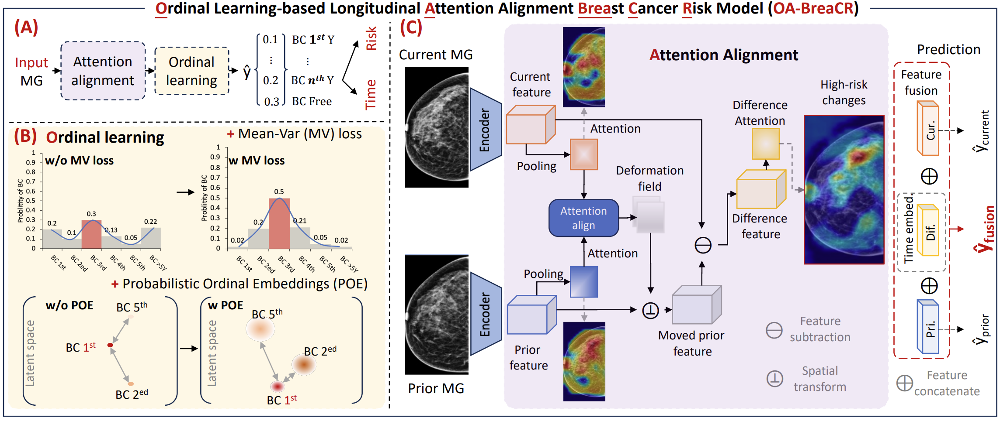

OA-BreaCR
📌 Overview
OA-BreaCR is a longitudinal breast cancer risk prediction model that combines ordinal learning, temporal alignment of breast tissue changes, and probabilistic latent embeddings to improve both risk prediction and time-to-event estimation.
The model operates on two-timepoint mammograms (current and prior exams) and explicitly models the temporal evolution of breast tissue using attention-based registration and feature-level deformation.
It is designed to support both: - Breast cancer risk prediction - Time-to-event (ordinal) prediction of future cancer occurrence
🧠 Key Idea
OA-BreaCR is built around three core principles:
-
Ordinal learning for time-to-event prediction:
The model learns structured risk over time using mean-variance ordinal loss and probabilistic ordinal embeddings (POE), enabling more informative time-to-cancer predictions. -
Attention-based longitudinal alignment:
Breast tissue changes between prior and current exams are modeled using attention maps and learned flow fields in the feature space, improving interpretability of temporal changes. -
Feature-level fusion of longitudinal information:
Current, prior, and difference features are combined to form a unified representation for final risk prediction.
🏗️ Architecture

The model consists of four main components:
1. Feature Encoder
- A shared CNN backbone (ResNet-18) extracts feature maps from:
- Current mammogram
- Prior mammogram
- Input images are converted to 3-channel format if needed
2. Attention-Based Longitudinal Alignment
- Attention pooling extracts spatial representations from both time points
- A small flow network estimates a deformation field between exams
- A spatial transformer aligns prior features to the current features
- The model computes:
- Aligned prior features
- Absolute difference features (|current − aligned prior|)
3. Ordinal Feature Modeling
- Difference features are enriched with continuous positional encoding using time gap information
- This allows the model to explicitly learn temporal progression patterns
4. Feature Fusion and Prediction
- Three feature streams are combined:
- Current features
- Prior features
- Time-aware difference features
- A fusion MLP integrates all representations
- Optional Probabilistic Ordinal Embedding (POE) introduces stochastic latent structure
- Final risk is predicted using a linear classification head
🔄 Input / Output
Input
The model expects a batch dictionary with:
current_image: Current mammogram[B, 1, H, W]previous_image: Prior mammogram[B, 1, H, W]time_gap: Time between exams[B]years_to_cancer: Target time-to-event for current examyears_to_cancer_prior: Target time-to-event for prior examyears_to_last_followup: Censoring information
Output
The forward method returns a dictionary containing:
final: Primary fused risk logitscurrent: Risk prediction from current exam onlyprior: Risk prediction from prior exam onlydifference: Risk prediction from temporal difference featuresflow_field: Learned deformation field for alignmentemb_final: Optional probabilistic ordinal embeddinglog_var_final: Uncertainty estimate (if POE is enabled)loss: Registration alignment loss (attention consistency)
These outputs are consumed by two helper methods:
-
get_risk_heads(outputs, batch)
Uses the outputs fromforwardto construct structured dictionaries for each prediction head:final: Usesfinalwithyears_to_cancerandyears_to_last_followupcurrent: Usescurrentwithyears_to_cancerandyears_to_last_followupprior: Usespriorwithyears_to_cancer_priorandyears_to_last_followup_priordifference: Usesdifferencewithyears_to_cancerandyears_to_last_followup
-
Each head contains:
risk: Predicted logitsrisk_label: Time-to-event targetyears_lfu: Follow-up / censoring informationemb,log_var: Optional probabilistic embeddings (if POE is enabled)weight: Contribution to the total training loss
This enables multi-head supervision, where the model jointly learns:
- Fused longitudinal risk (primary task)
- Current-only and prior-only predictions (auxiliary supervision)
- Difference-based predictions capturing temporal change
-
get_primary_risk_head(outputs)
Uses the outputs fromforwardto return the final prediction for evaluation:- Uses the logits from the final fully connected layer (
final) - If stochastic embeddings are used, predictions are averaged across samples
- Softmax is applied to obtain a probability distribution over time horizons
- The probabilities are converted into a cumulative risk score over a specified follow-up period
- Uses the logits from the final fully connected layer (
This represents the model’s primary time-to-event risk estimate, incorporating both longitudinal information and ordinal structure.
🧩 Integration in This Framework
OA-BreaCR is implemented as a subclass of BaseRiskModel and:
- Supports longitudinal two-timepoint mammography input
- Integrates ordinal learning for time-to-event prediction
- Includes attention-based feature alignment
- Optionally uses probabilistic ordinal embeddings (POE) for uncertainty modeling
- Produces multiple prediction heads for auxiliary supervision
⚙️ Key Components
- CNN Encoder: Extracts deep visual features from mammograms
- Attention Pooling Module: Produces spatial attention maps for alignment
- Flow Network: Estimates deformation fields between timepoints
- Spatial Transformer Block: Warps prior features into current space
- Continuous Positional Encoding: Injects time-gap information into difference features
- POE Latent Module (optional): Models uncertainty in ordinal embedding space
- Fusion MLP: Combines multimodal longitudinal features
📉 Risk Prediction
OA-BreaCR performs ordinal risk prediction over time, explicitly modeling:
- Time-to-cancer as an ordered regression problem
- Uncertainty via probabilistic embeddings (optional POE)
- Longitudinal change through feature alignment
The final prediction is derived from:
finallogits → softmax → cumulative risk score- Optional probabilistic aggregation when POE is enabled
Additionally, auxiliary heads (current, prior, difference) provide:
- Regularization
- Improved temporal representation learning
- Better interpretability of longitudinal changes